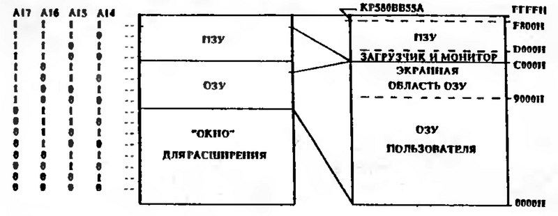
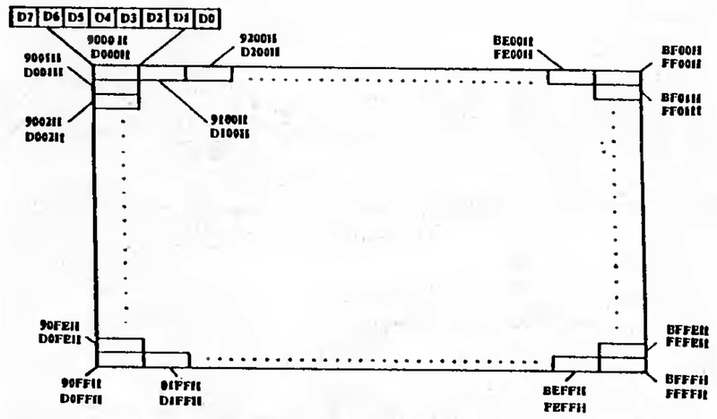
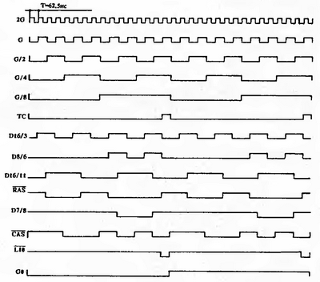
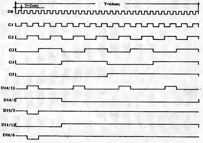
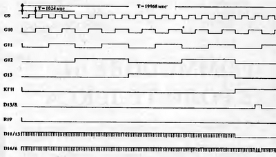
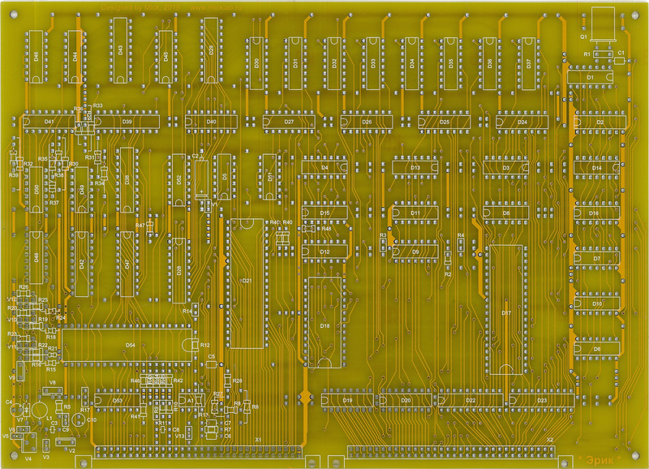
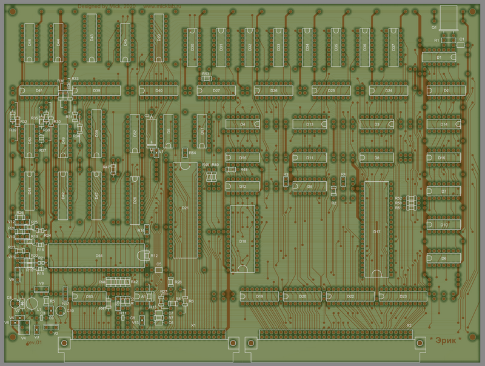

www.spetsialist-mx.ru
САЙТ О ПК "СПЕЦИАЛИСТ" И ЕГО КЛОНАХ
| |
|
| ГЛАВНАЯ | |
| ЛИК | |
| ЛИНЁВСКИЙ | |
| СПЕЦИАЛИСТ-М | |
| СЯБР | |
| УЦА | |
| ЭКСПРЕСС | |
| ЭРИК | |
| СПЕЦИАЛИСТ МХ | |
| ДРУГИЕ | |
| ССЫЛКИ | |
| ОБРАТНАЯ СВЯЗЬ |
ПК "ЭРИК"
На базе ПК "Специалист" Ложкиным Олегом Евгеньевичем был разработан программно совместимый с ним персональный компьютер с открытой архитектурой и контроллером НГМД. Он снимает проблему расширения, т. к. имеет полный доступ к адресному пространству ввода - вывода и расширенное до 32 МБайт адресного пространства памяти.
Компьютер содержит:
- системный канал с буферированными шинами адреса и данных;
- шины управления;
- шины расширения памяти;
- контроллер НГМД;
- процессор Z80A, работающий на частоте 4 МГц;
- микросхему ПЗУ 27512;
- регистр цвета, позволяющий создавать на экране цветное изображение, независимо кодируя две экранные области ОЗУ своим цветом, и устанавливать цвет фона;
- преобразователь +5 В > +12 В для питания микросхем КР1818ВГ93 и КР140УД608.
Технические характеристики компьютера:
- процессор Z80A - 4 МГц, до 1 миллиона операций в секунду;
- объем ОЗУ на плате - 64 кБайт (КР565РУ5 - 8 шт.);
- объем ПЗУ на плате - 64 кБайт (27512);
- подключение дополнительной памяти - до 32 МБайт;
- цветной графический режим - 384 Х 256 точек, одновременно 4 цвета из 8 основных;
- 2 независимые экранные области ОЗУ;
- контроллер НГМД - 2 НГМД;
- клавиатура ПК "Специалист";
- один источник питания +5 В / 1,5 А.
Адресное пространство и архитектура. Программная совместимость двух компьютеров требует не только совместимых процессоров, но и одинаковой архитектуры. Должны быть одинаково распределены: адресное пространство памяти (ОЗУ и ПЗУ), адресное пространство ввода - вывода, структура построения экранной области ОЗУ; должны совпадать адреса всех используемых портов (клавиатура, звук, канал работы с магнитофоном и др.).
Именно поэтому новый компьютер почти полностью повторяет архитектуру ПК "Специалист". Однако адресного пространства в 64 кБайт явно недостаточно, поэтому при одинаковой архитектуре разбивка адресного пространства, повторяющая ПК "Специалист", является одним из вариантов, устанавливаемых по "сбросу", из множества возможных.
Для расширения адресного пространства памяти в компьютер введен регистр расширения RR, выполненный на микросхеме D39 (КР1533ИР35) и адресуемый (только для записи) по адресу ввода - вывода F1Н. Этим регистром формируются 2 дополнительных адресных разряда A16 и А17, увеличивающих память до 256 Кбайт. Для большей "гибкости" компьютера переключение адресного пространства осуществляется блоками по 16 кБайт в зависимости от адресных разрядов А15 и A14, выставляемых процессором. Поэтому в регистр RR записываются 4 значения адресных разрядов A17 и A16 для каждого блока адресов, определяемых адресными разрядами A15 и А14.
Значение разрядов регистра RR следующее: адресным разрядам А17 и А16 соответствуют:
- разряды Dl, D0 для адресов (А15, А14=00) 0000H...3FFFH;
- разряды D3, D2 для адресов (A15, А14=01) 4000H...7FFFH;
- разряды D5, D4 для адресов (A15, А14=10) 8000H...BFFFH;
- разряды D7, D6 для адресов (А15, А14=11) C000H...FFFFH.
Например, по сигналу "сброс" А17 и А16 устанавливаются в "1" при любых значениях А15 и А14. Значения А17, А16=11 определяет в адресном пространстве область ПЗУ, где записана программа инициализации компьютера с адреса 0000Н. Именно с этого адреса процессор начинает работу после поступления сигнала /RESET (сброс). Затем в регистр RR заносится (по программе) значение 14Н (00010100В).
Значение А17, A16=10 определяет обращение процессора к ОЗУ, установленному на плате. При этом значении (14H) формируется следующее адресное пространство компьютера: по адресам 0000H...3FFFH, C000H...FFFFH - ПЗУ; по адресам 4000H...BFFFH - внутреннее ОЗУ. Такое построение адресного пространства памяти необходимо для организации "стека" в ОЗУ и отработки программы инициализации, после окончания которой в регистр RR заносится значение 15Н, определяющее (вариант ПK "Специалист") 48 кБайт внутреннего ОЗУ (0000H...BFFFH) и 16 кБайт ПЗУ (C000H...FFFFH) с переходом по адресу С000Н - "загрузчик" ПК "Специалист".
Следует обратить внимание на то, что при значении A17=1 включается внутренняя память компьютера - ОЗУ и ПЗУ, а при A17=0 - внешняя память размером в 128 кБайт (см. на рисунке). Адресное пространство в 128 кБайт при A17=0 используется в качестве "окна" расширения. Для этого в компьютер введен регистр "окна" - RW, выполненный на двух микросхемах D19, D20 (KP1533TM8). Регистр адресуется (только для записи) по адресу ввода - вывода F0H. Выходы этого регистра (Q7...Q0, /Q7.../Q0) совместно с А17=0 определяют подключение одного из 256 возможных блоков памяти объемом в 128 Кбайт каждый. Таким образом, максимально возможная внешняя память компьютера составляет 32 МБайт, что более чем достаточно для радиолюбительского компьютера сегодня и перспективно в будущем, особенно при работе с операционной системой.

Необходимо обратить особое внимание на старшие 16 кБайт памяти ПЗУ (C000H...FFFFH). В ПК "Специалист" это адресное пространство распределено следующим образом: адреса C000H...EFFFH - ПЗУ; F000H...F7FFH - дополнительный параллельный периферийный адаптер КР580ВВ55А - программатор и пр.; F800H...FFFFH - основной параллельный периферийный адаптер КР580ВВ55А - клавиатура, звук, канал работы с магнитофоном.
Использование 2 Кбайт памяти вместо четырех адресов, используемых КР580ВВ55А, расточительно и недопустимо, поэтому, учитывая малую применяемость дополнительного адаптера, решено его адреса использовать в ПЗУ (F000H...F7FFH). Сложнее обстоит дело с основным адаптером, его базовая программная поддержка не позволяет ликвидировать или перенести его на другие адреса. Поэтому данный порт оставлен без изменений, однако в компьютер введен дополнительный внешний сигнал /BLOK, блокирующий этот порт и включающий вместо него ПЗУ и позволяющий использовать все 64 кБайт памяти ПЗУ.
Экранная область ОЗУ по структуре и расположению в адресном пространстве соответствует ПК "Специалист" - 9000H...BFFFH. Возможность использования старших адресов C000H...FFFFH в качестве ОЗУ позволяет разместить в них еще одну экранную область ОЗУ, аналогичную первой по размерам и структуре и расположенную по адресам D000H...FFFFH. Структура экранных областей представлена на рисунке ниже.

Информация из этих двух экранных областей ОЗУ одновременно выводится на ТВ - монитор, формируя изображение. Для получения цветного изображения в компьютере установлен регистр цвета RС, выполненный на микросхеме D42 (К555ИР35). Регистр адресуется (только для записи) по адресу ввода - вывода F2Н. Регистр RС присваивает цвет каждой экранной области независимо, а также кодирует цвет фона, что дает возможность одновременно высвечивать на экране 4 цвета из 8 основных.
Структура регистра RC:
- разряды D2, D1, D0 - G, R, В экранной области 9000Н...BFFFH;
- разряды D5, D4, D3 - G, R, B экранной области D000H..FFFFH;
- разряды D7, D6 - G, В - цвет фона.
Окончательное формирование цветa реализовано на элементах D49, D50, V10...V12. Выходы формирователя используются для подключения цветного или монохромного монитора (цвета заменяются градациями яркости). Выходные сигналы цвета являются аналого - цифровыми, что дает возможность при одинаковых цветах двух экранных областей получать цветное изображение с разной градацией яркости и предоставляет компьютеру дополнительные возможности.
В схему введен контроллер НГМД, выполненный на микросхеме D54 (КР1818ВГ93). Выходные интерфейсные сигналы формируются буферными формирователями с открытыми коллекторными выходами на микросхеме D53 (КР1533ЛН10). Формирователь сигнала чтения и сигнала синхронизации обеспечивает качественное считывание данных с накопителя на гибких магнитных дисках. Он выполнен на микросхемах D51 (KP1533TM2) и D52 (КР1533ИЕ10). Для получения дополнительных сигналов введен регистр диска RF, адресуемый (только для записи) по адресу ввода - вывода FЗН и выполненный на микросхеме D48 (КР1533ТМ8). Назначение разрядов регистра RF:
- разряд D0 - сторона дискеты. При D0="0" - 0 - я сторона, при D0="1" - 1 - я сторона;
- разряд D1 - выбор дисковода. При D1="0" - дисковод "А", при D1="1" - дисковод "В";
- разряд D3 - сигнал установки плотности чтения - записи информации на дискету. При DЗ="0" - двойная плотность, при DЗ="1" - одиночная плотность;
- разряд D4 - сигнал "сброс", поступающий на контроллер НГМД КР1818ВГ93.
Адресуется контроллер НГМД по адресам ввода - вывода:
- F4H - при записи - регистр команд для записи текущей выполняемой команды, при чтении - регистр состояния для определения текущего состояния различных функциональных узлов микросхемы и НГМД;
- F5H - регистр дорожки для записи номера требуемой дорожки или хранения информации о номере дорожки, на которой находится магнитная головка;
- F6Н - регистр сектора для хранения информации о номере считываемого (записываемого) сектора;
- F7Н - регистр данных для приема, хранения и преобразования данных.
Описание работы. Синхронизация работы всех устройств компьютера осуществляется от стабильного кварцевого генератора, собранного на одном пороговом элементе микросхемы D1.1 (КР1533TЛ2 - триггера Шмитта) с задающей RC - цепочкой и кварцевым резонатором. Стабильная частота 16 MГц поступает на вход синхронного счетчика D2 (КР1533ИЕ10).
Синхронные выходные сигналы счетчика используются для формирования служебных сигналов в компьютере:
- F - тактовый сигнал (4 MГц) для процессора;
- С10 - тактовый сигнал (8 MГц) для сдвигающих регистров D44...D46 (КР1533ИР10);
- /RAS - сигнал адреса строки для ОЗУ;
- /СAS - сигнал адреса столбцов для ОЗУ.
Эти же сигналы вместе с другими участвуют в формировании служебных сигналов:
/OEM - сигнал включения буферного формирователя данных внутреннего ОЗУ;
/WAIT - сигнал "ожидание" для процессора;
/L10 - сигнал параллельной записи данных в сдвигающие регистры.
Выходной сигнал синхронного счетчика G/8 (1 МГц) поступает на цепочку последовательных счетчиков D3, D4 (К555ИЕ19), которые осуществляют циклический счет с периодом кадровой развертки равный 19968 мкс.
Из выходных сигналов этих счетчиков формируются следующие сигналы:
R19 - сигнал сброса счетчиков для организации цикла в 19968 мкс;
/L10, /SS - синхросмесь строчных и кадровых синхроимпульсов, поступающих на усилитель V9 и далее - на ТВ - монитор, осуществляя развертку видеоконтрольного устройства.
Кроме того, сигнал G2 (125 кГц) используется в преобразователе +5В > +12В.
Импульсный преобразователь напряжения выполнен на транзисторном ключе V4 и накопителе энергии - индуктивности L1. Транзистор V4 открывается с частотой 125 кГц. При открытом транзисторе индуктивность накапливает энергию, а при закрытом - отдает ее через диод V6 на емкость C4 и нагрузку по цепи +12 В. Стабилитрон V7 ограничивает напряжение на уровне +12 В. Пpeобразователь позволяет подключить нагрузку до 20...25 мА, что вполне достаточно для питания внутренней схемы (КР1818ВГ93 и КР140УД608). При наличии внешнего источника питания +12 В преобразователь можно не монтировать на плате. Следует отметить нетрадиционное включение микросхемы А1 (КР140УД608), необходимое для исключения третьего источника питания -5 В.
Для установки компьютера в исходное состояние служит схема формирования сигнала RESET (сброс), выполненная на микросхеме D5.1 (KP1533TM2). Микросхема тактируется сигналом КГИ - кадровым гасящим импульсом. Первый "сброс" осуществляется по включению компьютера в сеть. Он формируется зарядом конденсатора С2 до уровня "1". Последующие сигналы "сброс" (RESET) формируются, при необходимости, нажатием клавиши "СБР", которая включается между сигналом СБР и общей точкой (корпусом). По сигналу "сброс" приводятся в исходное состояние все микросхемы, имеющие данный вход, и компьютер приводится в исходное состояние:
- процессор обнуляет свои внутренние регистры и переводит шины адреса и данных в высокоимпедансное состояние;
- адаптер клавиатуры устанавливает свои три порта А, В, С на ввод данных;
- регистры D19, D20, D39, D42, D48 устанавливают на своих выводах "0";
- устанавливается в исходное состояние контроллер НГМД.
Во время действия сигнала "сброс" работа процессора прекращается, в работе остаются счетчики D2...D4, формирующие строчные и кадровые гасящие и синхронизирующие импульсы, а также микросхемы ОЗУ, опрашиваемые по нарастающим адресам, формируемым счетчиками D3, D4 происходит считывание информации из экранных областей ОЗУ и передача их на сдвигающие регистры. Однако на экране присутствует темное поле, т. к. регистр D42 "сбросом" установил "черный" цвет отображения. При последовательном опросе микросхем ОЗУ происходит их регенерация с циклом в 128 мкс, что не дает "потерять" информацию из микросхем динамического ОЗУ. Такой опрос экранных областей ОЗУ происходит постоянно, независимо от сигнала "сброс'' и других сигналов.
Адресное пространство. Счетчики D2...D4, тактируемые кварцевым генератором, работают в режиме нарастающего счета. Микросхема D2 работает в режиме двоичного счета и имеет на выводах "меандры" частот, кратных 2:
- 2G - 16 МГц (Т=62,5 нс);
- G – 8 МГц (T=125 нс);
- G/2 - 4 МГц (T=250 нс);
-G/4 - 2 МГц (T=500 нс);
- G/8 - 1 МГц (T=l мкс).
Эти сигналы используются для формирования служебных сигналов.
Выход ТС микросхемы D2 используется для формирования сигнала /L10 - параллельная запись в сдвигающие регистры D44...D46 (КР1533ИР10). Сигнал /L10 блокируется сигналом с выхода 13 микросхемы D11 - смесь строчных и кадровых гасящих импульсов. Сигнал F тактовой частоты процессора является "задержанным" сигналом G/2. Задержка выполнена на элементах микросхем D1.3 и D9.1. Она необходима для увеличения времени выборки данных при обращении процессора к микросхемам ОЗУ в цикле M1. Тактовый сигнал С10 является инвертированным сигналом С, который инвертируется элементом микросхемы D14.2. Тактовый сигнал С10 с периодом в 125 нс предназначен для побитного вывода информации из экранных областей ОЗУ на ТВ - монитор последовательным сдвигом записываемых байтов в сдвигающие регистры. Во время действия гасящих, строчных и кадровых импульсов параллельная запись байтов в сдвигающие регистры прекращается (/L10 пассивен) и с последовательных входов на выходы передается "0" -"черный" цвет.
Сигналы управления динамическим ОЗУ /RAS и /CAS формируются следующими элементами микросхем:
/RAS - D16.1, D16.2, D8.3, D11.2;
/CAS - D16.2, D7.3, D16.3.
Сигналы /RAS и /CAS предназначены для организации цикла обращения к микросхемам динамического ОЗУ. При поступлении сигнала /RAS (переход сигнала из "1" в "0") в микросхемы ОЗУ "защелкивается" адрес строки (младшие 8 разрядов шестнадцатиразрядного адреса) и происходит регенерация строки ОЗУ. При поступлении сигнала /CAS в микросхемы "защелкивается" адрес столбца (старшие 8 разрядов шестнадцатиразрядного адреса) и происходит выборка данных из микросхем памяти в цикле чтения или запись данных в память в цикле записи. Время циклов обращения к ОЗУ составляет 500 нс, что позволяет использовать практически любые микросхемы ОЗУ КР565РУ5Б, В, Г.
Описанный цикл является обычным и используется в компьютере для обращения процессора к ОЗУ. Цикл выполняется при сигнале G/8="0". При G/8="1" в компьютере используется цикл страничного обращения - при поступлении одного сигнала /RAS поступают два сигнала /CAS с различными адресами столбцов. В результате такого цикла выбирается два байта информации при тех же 500 нс.
Цикл страничного обращения используется только в режиме чтения и предназначен для считывания информации из двух экранных областей ОЗУ. Экранные области различаются в адресном пространстве памяти только одним адресным разрядом А14: при А14="0" - экранная область 9000H ...BFFFH, при А14="1" - экранная область D000H...FFFFH. Поэтому для смены адреса столбцов необходимо поменять разряд А14 с "0" на "1" при страничном обращении. Таким сигналом является G/4, поданный на вход D27/12. Диаграммы описанных сигналов представлены ниже на рисунке.

Необходимость выборки байта из экранной области ОЗУ каждую микросекунду обусловлена стандартами на ТВ - мониторы и структурой экрана компьютера. Стандартом установлена длительность строки ТВ - мониторов - 64 мкс. Компьютер "разбивает" эту строку следующим образом:
- 16 мкс - строчный гасящий импульс, имеющий в середине строчный синхроимпульс (4 мкс);
- 48 мкс - отображаемая на экране строка.
При выводе на экран 1 байт в мкс получаем 384 точки изображения в строке - формат компьютера. Таким образом, необходимо считывать информацию из экранных областей ОЗУ для вывода ее на экран каждую микросекунду и соответственно каждую микросекунду изменять адреса считывания. Для перебора адресов используются выходы счетчиков D3, D4 - сигналы G0...C13. После пересчета всех адресов изображение на экране ТВ - монитора заполняется полностью - 256 строк изображения по 384 точки в каждой строке и появляется "1" - сигнал КГИ (кадровый гасящий импульс), блокирующий вывод информации на экран до прихода сигнала R19. После этот весь цикл повторяется.
В середине кадрового гасящего импульса формируется кадровый синхроимпульс (КСИ), используемый для развертки ТВ - монитора.
Гасящие и синхроимпульсы формируются следующими элементами микросхем:
- СГИ - строчный гасящий импульс - D14.3;
- ССГИ - синхросмесь гасящих импульсов - D11.4;
- ССИ - строчный синхроимпульс - D14.4, D15.2;
- КСИ - кадровый синхроимпульс - D13.2;
- SS - синхросмесь - D16.4.
Диаграммы описанных сигналов представлены ниже на рисунках.
__
Считанные два байта информации в конце каждой микросекунды по сигналу /L10 записываются в сдвигающие регистры D44, D45. При этом первый байт из экранной области 9000H...BFFFH сначала записывается в регистр временного хранения информации, выполненный на микросхеме D43 (КР1533ИР27).
Второй байт из экранной области D000H...FFFFH записывается сразу в сдвигающий регистр D45 и одновременно перезаписывается байт из регистра D43 в сдвигающий регистр D44. Записанные байты сдвигаются последовательным сдвигом с периодом 125 нс (сигнал С10) и с выходов сдвигающих регистров поступают в формирователь цвета, выполненный на микросхемах D42, D49, D50.
Третий сдвигающий регистр D46 формирует цвет фона изображения, выдающий на выход "1" во время передачи изображения и "0" - во время действия гасящих импульсов. Его выход также поступает в формирователь цвета.
Этим трем сигналам в формирователе присваивается свой цвет согласно байту, записанному в регистр цвета RC D42. Записанная процессором в экранные области ОЗУ информация периодически выводится на экран (50 раз в секунду - частота кадровой развертки ТВ - монитора). Меняя эту информацию, процессор с большой скоростью изменяет изображение на экране, что представляется пользователю как быстро меняющаяся "картинка".
После окончания действия сигнала "сброс" (/RESET) процессор переводит свои выходы в активное состояние и обращается с циклом чтения по адресу 0000Н. По этому адресу находится программа инициализации компьютера, записанная в ПЗУ. После выполнения этой программы процессор переходит по программе на адрес С000Н, где расположены "загрузчик" и "монитор" от ПК "Специалист" и работает в дальнейшем по имеющемуся программному обеспечению.
В компьютере используются следующие служебные сигналы:
- /WAIT - сигнал "ожидание". Переводит процессор в состояние ожидания при его обращении к внутреннему ОЗУ с целью формирования цикла обращения к ОЗУ при G/8="0". Этот сигнал, формируемый микросхемой D12 (КР1533ЛА10), имеющей выход с открытым коллектором, выводится на внешний разъем X1 - A2 для синхронизации работы процессора с внешними платами расширения;
- /WE - сигнал записи, подаваемый на микросхемы внутреннего ОЗУ в цикле записи при обращении процессора;
- ВА16, ВА17 - буферные адресные сигналы, формируемые в компьютере;
- /ВА17 - инверсный буферный адресный сигнал, предназначенный для организации "выборки" внешних устройств расширения;
- ВА0...ВА15 - буферные адресные сигналы;
- BD0...BD7 - буферная шина данных;
- М - сигнал обращения процессора к адресному пространству памяти, исключающий циклы регенерации процессором;
- /IORD - сигнал обращения процессора к адресному пространству ввода - вывода с циклом чтения;
- /IOWR - сигнал обращения процессора к адресному пространству ввода - вывода с циклом записи;
- /MR - сигнал обращения процессора к адресному пространству памяти с циклом чтения;
- /MW - сигнал обращения процессора к адресному пространству памяти с циклом записи;
- /ОЕВ - сигнал "включения" буферного формирователя данных D28 (КР1533АП6) при обращении процессора к адресному пространству ввода - вывода, к адресному пространству памяти – при А17="0" (внешняя память расширения);
- /BLOK - внешний сигнал, предназначенный для отключения работы ППА D21 КР580ВВ55А сигналом RESBL и дающий возможность использовать старшие 2 кБайта ПЗУ D18;
- RESBL - сигнал "сброс" для D21, переводящий каналы адаптера на ввод данных и обеспечивающий возможность работы клавиатуры с другим контроллером (активная клавиатура).
На внешние разъемы выведены сигналы для подключения базовых (блок питания, клавиатура, НГМД, ТВ - монитор, магнитофон) и дополнительных (системный канал) внешних устройств - соответственно разъемы X1 и Х2. Сигналы управления системного канала выведены на разъем X1. Кроме системного канала, на разъем Х2 с выходов счетчиков D2...D4 выведены сигналы, представляющие собой "меандры" частот, полученные двоичным делением частоты 16 МГц. Эти сигналы могут найти применение во внешних платах расширения. Клавиатура подключается к разъему X1 аналогично ПК "Специалист" и никаких отличий не имеет. Накопители на гибких магнитных дисках также подключаются к разъему X1 и используют все интерфейсные сигналы контроллера НГМД или их часть - в зависимости от типа применяемых НГМД.
Множество выходных сигналов для ТВ - монитора позволяет использовать самые различные мониторы: монохромные и цветные, с разными полярностями сигналов цвета. Эти сигналы формируются аналоговыми инверторами на транзисторах V10...V12, выполняющих также роль буферов.
Реально работающего компьютера не встречалось. Возможно у автора этого компьютера и был единсвенный экземпляр. Публиковался в журнале Радиолюбитель с 4 по 7 номера за 1994 год. Так как в тот период в стране был бум развития Спектрум - машин, то естественно дальнейшего развития и не последовало. Сам компьютер базировался уже на процессоре Z80A с частотой 4 МГц, имел встроенный контроллер дисковода. Также была включена поддержка цвета. Ёмкость ОЗУ - 64 кБайт. В 1994 году для нового компьютера этого объема было мало. В целом архитектура повторяла Специалист, но были и другие изменения, которые потом сказались на программной совместимости (по признанию автора компьютера). Все эти нововведения наложили ограничения на программную совместимость с базовым компьютером Специалист. Включение в схему контроллера дисковода не поддерживается ни единой программой. Излишняя буферизация управляющих сигналов и шин данных вызывает много вопросов. Возможно автор изначально разрабатывал более мощный компьютер, но перед публикацией в журнале решил компьютер упростить и не до конца убрал все лишнее из схемы . Восстановленную плату для повторения изготовили в 2019 г. Сейчас идёт запуск и испытание новой ревизии платы.


Назначение |
Схема |
Схема ПК "Эрик" от Mick'а
|
|
Прошивка ПЗУ ПК "Эрик"
|
|
Гербер файлы печатной платы от Mick'а |